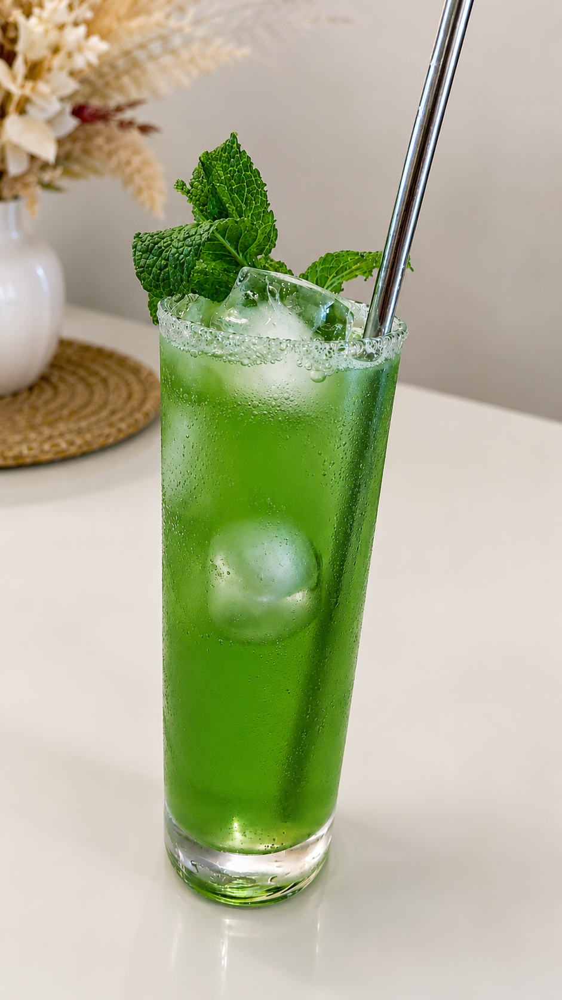

Receitas Favoritas

Mousse de Maracujá
Web Lab - 2025/1Uma sobremesa deliciosa e fácil de fazer
Igredientes
1 lata de leite condensado
1 lata de creme de leite
1 lata de maracujá concentrado
1/2 xícara de H²O
Modo de Preparo
- Em um liquidificador, bata o leite condensado, o creme de leite e o suco de maracujá até obter uma mistura homogênea.
- Se estiver muito densa, adicione água e bata por mais alguns segundos.
- Despeje a musse em taças individuais e leve à geladeira por cerca de 4 horas ou até que fique firme.
- Sirva gelado e bom apetite!
"Receita muito boa, eu recomendo."
- Prof. Pablo Leon Rodrigues

🍸 Ácido Sulfúrico — Elixir Corrosivo
Uma bebida inspirada em conceitos químicos, reinterpretada como um elixir alquímico. Apesar do nome agressivo, seu sabor é equilibrado, com notas cítricas e intensidade marcante.
🧪 Componentes Alquímicos
🧊 Base: Copo Long Drink com gelo
⚗️ Essência neutra: 40 ml de vodka (Absolut)
🔵 Reagente azul: 20 ml de curaçao (Stok)
🍋 Catalisador ácido: 20 ml de suco de limão
🍏 Extrato energético: 10 ml de xarope de maçã verde (Monin)
⚡ Finalização: completar com Red Bull
⚗️ Modo de Preparo
Misture os reagentes em um recipiente com gelo, iniciando pela base alcoólica.
Adicione os compostos cítricos e finalize com a solução energética.
Sirva imediatamente.